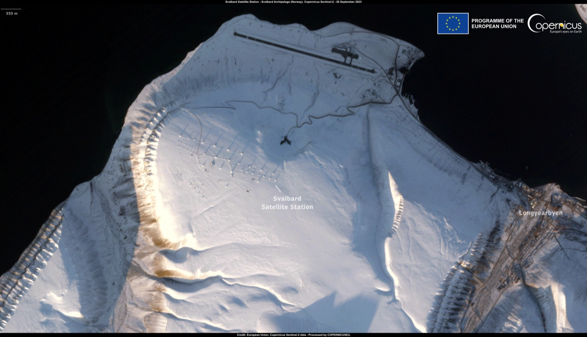

Executive Summary
구글이 궤도에 올린 AI 칩이 지상에서 올려보낸 질문에 답을 내놨다. 10월 1일 저궤도에 오른 선캐처(Project Suncatcher) 시제 위성이 몇 주에 걸친 점검을 마친 뒤, 발사 전에 실어 둔 Gemma 4로 우주를 소재로 한 하이쿠 한 편을 짓고 노르웨이 스발바르 상공을 지나며 지상으로 내려보냈다. 구글은 이를 데이터센터급 TPU가 궤도에서 낸 첫 AI 응답이라고 적었고, 발표는 10월 30일에 나왔다. 이 글은 그 세 줄이 어디까지 닿고 어디서 멈추는지를 본다.
눈에 띄는 대목은 구글이 고른 표현이다. 우주에서 처음 돌아간 AI가 아니라 데이터센터급 칩의 궤도상 첫 응답이라고 적었다. 소형 위성에서 가벼운 모델을 돌린 사례는 이미 있으니 말을 조심해서 고른 셈이고, 새로운 쪽은 지상 데이터센터에 꽂히는 것과 같은 계열의 칩이 궤도에서 추론을 냈다는 지점이다. 속도도 전력도 칩 상태도 함께 공개되지는 않았다. 다음 차례는 2027년 초에 위성 두 기를 올려 위성끼리 빛으로 데이터를 주고받는 링크를 시험하는 일이다.
1절부터 4절까지는 구글 공식 글과 설계 문서, 그리고 발사 시점 보도가 밝힌 내용이다. 5절은 이 소식을 데이터를 맡은 쪽의 질문으로 옮긴 해석이다.
주요 수치
아래 네 숫자는 이번 발표가 아니라 구글이 그 전에 낸 설계 문서에서 왔다. 궤도에서 잰 값은 하나도 없다. 실험실에서 낸 통신 속도, 설계 계산에 쓴 예시 규모, 지상 빔 시험에서 나온 선량, 자체 분석이 짚은 비용 선이 전부다. 이번 위성이 궤도를 도는 동안 내놓을 숫자는 아직 없다.
출처: 구글 리서치 우주 기반 AI 인프라 시스템 설계 문서.
1.6Tbps
광통신 벤치 시연 속도
송수신기 한 쌍으로 양방향 각 800Gbps를 냈다. 지상 실험실 결과이고 궤도에서는 아직이다
81기
설계 문서가 든 군집 규모
반경 1km 안에 모여 위성 간 거리를 100~200m로 유지하는 예시 구성이다. 확정된 계획이 아니다
750rad
5년 임무 예상 피폭량
메모리에 이상이 보이기 시작한 2krad의 절반에 못 미친다. 다만 지상 양성자 빔 시험에서 나온 값이다
kg당 200달러
발사비가 내려가야 할 선
2030년대 중반까지 이 밑으로 떨어져야 지상 데이터센터의 에너지 비용과 견줄 만해진다는 구글 자체 분석이다
궤도에서 내려온 세 줄
순서는 간단하다. 위성이 지상국 위를 지날 때 연구진이 프롬프트를 올려보냈고, 위성은 자기 안에서 모델을 돌려 답을 만들었으며, 노르웨이 스발바르 상공을 지날 때 그 답을 내려보냈다. 질문 한 줄이 올라갔고 시 세 줄이 내려왔다. 그사이 지구와 오간 것은 글자뿐이고, 무거운 계산은 모두 위성 안에서 끝났다.
내려온 하이쿠는 영어 5-7-5 음절로 된 세 줄이다. 구글이 공개한 원문과 우리말로 옮긴 것을 나란히 둔다.
Blue marble below
Data streams in silent grace
Starlight feeds my core.아래로는 푸른 구슬
소리 없이 흐르는 데이터
별빛이 내 코어를 먹인다위성에 실린 Gemma 4가 낸 응답. 영어 원문은 구글 공식 블로그가 공개한 그대로이고, 우리말은 페블러스가 옮겼다.
구글은 하이쿠 하나로 끝내지 않았다. 같은 요령으로 리머릭을 한 편 더 짓게 했고, 위성 상태를 묻는 기본 텔레메트리 질의도 함께 돌렸다고 적었다. 발사에서 이 응답까지 걸린 몇 주 동안 연구진이 한 일은 점검 목록을 지우는 쪽에 가까웠다. 호스트 컴퓨터와 TPU 트레이에 전원을 넣고, 초기 머신러닝 시험을 돌려 본 것이 그 목록에 들어 있었다. 프로젝트를 이끄는 트래비스 빌스(Travis Beals)는 이 결과로 칩이 우주 비행 자격을 공식으로 얻었고, 이 우주 문샷의 긴 여정에서 중요한 성취라고 밝혔다.
위성은 10월 1일 미국 반덴버그 우주군 기지에서 스페이스X 팰컨 9의 트랜스포터-18 공유 발사 편에 실려 올라갔다. 무엇을 싣고 올라갔는지는 페블러스가 9월 26일에 쓴 글에서 다뤘다. 냉장고만 한 몸체에 AI 칩 넉 장, 태양전지가 내는 전력은 1킬로와트 남짓이고, 칩은 한 번에 15분가량 돌고 나면 열을 버리려고 멈춘다. 그때 세운 물음은 궤도에서 칩이 얼마나 버티느냐였다. 그 위성이 버티는 동안 실제로 무엇을 할 수 있는지는 이번 발표에서 처음 드러났다.

하이쿠가 증명한 것과 남겨 둔 것
증명된 것은 사슬이 끊기지 않았다는 사실이다. 지상국에서 올려보낸 글자가 위성의 호스트 컴퓨터에 닿았고, 거기서 TPU 트레이에 전원이 들어갔고, 모델이 메모리에 올라가 답을 만들었고, 그 답이 다음 통과 때 지상으로 내려왔다. 이 가운데 한 고리만 어긋나도 아무것도 돌아오지 않는다. 구글이 이 사건을 "Hello World"에 빗댄 것은 그래서다. 프로그램 하나가 화면에 글자를 띄우는 순간이 성능을 증명하지는 않지만, 그 아래 깔린 기계가 전부 살아 있다는 것은 증명한다.
증명되지 않은 것은 그보다 많다. 모델이 답을 내는 데 걸린 시간도, 그때 칩이 쓴 전력도, 추론을 도는 동안 온도가 어디까지 올라갔는지도 공개되지 않았다. 지상에서 같은 모델을 돌렸을 때와 견줄 기준값도 없다. 구글 스스로도 다음 할 일을 열 지어 적었는데, 그 목록의 첫 줄이 열 스트레스와 방사선 노출 아래에서 TPU가 어떻게 동작하는지를 평가하는 일이다. 바꿔 말하면 버티는지에 대한 궤도 데이터는 이제부터 쌓인다.
방사선에 대해 지금 손에 있는 숫자는 전부 지상에서 나왔다. 구글은 트릴리움(Trillium) 세대 TPU를 67MeV 양성자 빔에 넣고 견디는 선량을 측정했다.
| 무엇을 쟀나 | 결과 |
|---|---|
| 시험 방법 | 67MeV 양성자 빔에 TPU를 노출해 누적선량과 단일 사건 영향을 측정 |
| 메모리 이상 시작점 | 고대역폭메모리(HBM)가 누적 2krad(Si)부터 불규칙한 동작을 보임 |
| 5년 임무 예상 피폭량 | 차폐 상태에서 약 750rad(Si) — 위 이상 시작점의 절반에 못 미침 |
| 완전 고장 | 최대 시험 선량 15krad(Si)까지 누적선량에 따른 하드 실패 없음 |
출처: 구글 리서치 우주 기반 AI 인프라 시스템 설계. 네 줄 모두 지상 가속기 시험 결과이고, 궤도에서 측정한 값이 아니다.
표를 읽는 방법에 주의할 데가 있다. 여유가 커 보이기는 하지만, 양성자 빔이 궤도의 방사선 환경을 그대로 흉내 내지는 못한다. 빔은 짧은 시간에 많은 선량을 몰아넣고 궤도는 몇 해에 걸쳐 조금씩 쌓는다. 그래서 이번 위성이 1년을 도는 동안 모으는 데이터가 따로 필요하다. 지상 시험으로는 어디쯤에서 문제가 날지 짐작할 수 있을 뿐이고, 그 짐작이 맞았는지는 궤도를 돌며 확인해야 한다.
다음 관문은 위성끼리 주고받는 빛
계산을 궤도로 올리는 일과 여러 기를 하나처럼 묶는 일은 다른 문제다. 위성 한 기에 실린 칩 몇 장으로 할 수 있는 일은 지상 데이터센터의 서버 한 대가 하는 일에 그친다. 큰 모델을 돌리려면 여러 대가 서로 중간 결과를 쉴 새 없이 주고받아야 하고, 지상 데이터센터는 그 일을 랙 사이 케이블로 한다. 궤도에는 케이블이 없으니 그 자리를 빛이 대신해야 한다.
구글이 설계 문서에 적은 그림은 위성 81기가 반경 1km 안에 모이고 이웃한 위성끼리 100~200m 거리를 유지하는 구성이다. 멀어지면 빛이 퍼져 신호가 약해지기 때문에 이 간격을 벗어나기 어렵다. 지상 실험실에서는 송수신기 한 쌍으로 양방향 각 800Gbps, 합쳐서 1.6Tbps를 냈다. 파장을 촘촘히 나눠 여러 채널을 동시에 보내고 공간으로도 한 번 더 나누는 방식이고, 이를 여러 쌍으로 늘리면 수십 Tbps에 닿는다는 것이 설계 문서의 계산이다.
2027년 초 미션은 이 그림의 첫 매듭을 묶는 일이다. 위성 두 기를 올려 서로 연결하고, 실험실에서 되던 빛의 링크가 초속 몇 킬로미터로 나는 두 물체 사이에서도 되는지를 본다. 구글 리서치는 이 다음 시제 미션을 지구관측 위성 회사 플래닛 랩스(Planet Labs)와 함께 2027년 초에 올린다고 적었다. 지상 링크를 거치지 않고 위성끼리 직접 묶이는 데까지 가야, 데이터가 생긴 자리에서 계산을 끝낸다는 그림이 비로소 성립한다.
시 한 편이 답하지 못한 세 가지
가장 큰 변수는 기술이 아니라 발사비다. 구글 자체 분석은 궤도 데이터센터의 에너지 비용이 지상과 비슷해지려면 발사 가격이 2030년대 중반까지 kg당 200달러 밑으로 내려가야 한다고 적었다. 이 조건이 충족되지 않으면 궤도에서 공짜로 받는 햇빛의 이점은 올리는 값에 그대로 먹힌다. 햇빛이 공짜라는 것과 그 햇빛을 받을 패널을 그 높이까지 올리는 일이 싸다는 것은 전혀 다른 이야기다.

두 번째는 내려보내는 길이다. 피츠버그대 전기컴퓨터공학과 교수이자 미국 국립과학재단의 우주 컴퓨팅 센터를 이끄는 앨런 조지(Alan George)는 사이언티픽 아메리칸에 그 데이터를 지상으로 가져올 편리하고 쉬운 방법이 우리에게 없다고 말했다. 궤도에서 아무리 많이 계산해도 결과를 받아 볼 통로가 좁으면 그 계산은 지상에서 쓸모를 갖지 못한다. 이 지적은 선캐처가 겨냥하는 바로 그 지점을 되묻는 것이기도 하다.
세 번째는 고치는 문제다. 카네기멜런대 브랜던 루시아(Brandon Lucia) 교수는 NPR에 이 구상이 매우 공상과학처럼 들리지만 많은 기술이 연구 수준에서는 이미 입증됐다고 평가했다. 다만 지상 데이터센터에서는 칩이 고장 나면 기술자가 걸어 들어가 고치면 되는데 궤도에서는 그럴 수 없다는 점을 들며, 그런 요소들은 비용과 복잡성이 10배에서 많게는 100배까지 증폭되므로 그만큼 큰 보상이 따라야 한다고 말했다. 로켓이 탄화수소 연료를 쓰고 수명을 다한 위성이 대기권에 다시 들어오며 오염을 남긴다는 점도 함께 지적됐다.
이 세 가지 가운데 10월 30일 발표가 숫자로 답한 것은 없다. 발표가 보인 데까지는 사슬이 이어졌다는 사실이고, 구글이 그 글에 적은 다음 할 일도 열과 방사선 아래에서 TPU를 계속 평가하는 일과 2027년 초 광통신 시험 둘이다. 발사비와 유지보수는 그 목록 밖에 있다. 2027년 미션이 묶으려는 것도 위성과 위성 사이의 링크이지, 조지가 없다고 말한 지상으로 가져오는 길은 아니다.
구글의 투자 규모를 보면 이 프로젝트의 위치가 더 분명해진다. NPR 보도에 따르면 순다르 피차이가 밝힌 2026년 설비투자 전망은 1,800억~1,900억 달러이고 2022년의 여섯 배가 넘는데, 그 돈은 압도적으로 지상 데이터센터로 간다. 구글이 선캐처를 부를 때 쓰는 낱말도 문샷이다. 당장 쓸 설비가 아니라 10년 뒤의 선택지를 지금 사 두는 쪽에 가깝다.
페블러스가 이 소식을 주목하는 이유
위성이라는 자리를 걷어 내면 남는 것은 오래된 질문이다. 데이터를 처리하는 곳까지 옮길 것인가, 데이터가 생긴 자리에서 처리하고 결과만 옮길 것인가. 지구관측 위성은 지금까지 앞쪽을 택해 왔다. 센서가 찍은 것을 저장해 뒀다가 지상국 상공을 지날 때 쏟아 내리고, 쓸모 있는 몇 장면은 그 뒤에 지상에서 골라낸다. 통과 시간은 짧고 대역은 정해져 있어서, 찍고도 내려보내지 못한 채 덮어쓰이는 데이터가 늘 생긴다.

선캐처에서는 그 뒤집은 순서가 실제로 작동했다. 이번에 내려온 것이 시 한 편이라 작아 보이지만, 궤도에서 모델이 돌고 그 결과만 지상으로 왔다는 구조는 똑같다. 센서가 찍은 영상을 궤도에서 걸러 구름에 덮인 장면을 버리고 바뀐 곳만 내려보낸다면, 같은 대역으로 훨씬 많은 관측을 쓸 수 있게 된다. 구글이 다음 미션을 지구관측 회사와 함께 올린다는 점도 이 방향과 무관해 보이지 않는다.
다만 자리를 옮기면 데이터에 붙는 조건도 함께 옮겨 간다. 데이터를 맡은 쪽이 미리 따져 둘 것이 셋이다.
- • 버린 데이터는 다시 못 받는다. 궤도에서 거르는 순간 버려진 원본은 지상에 아예 도착하지 않는다. 나중에 모델을 바꿔 다시 돌려 보고 싶어도 되돌릴 자료가 없다. 무엇을 거를지 정하는 기준은 그래서 지상의 필터보다 훨씬 보수적이어야 한다
- • 거른 쪽의 기록이 함께 내려와야 한다. 어떤 모델이 어떤 판본으로 어떤 임계값에서 걸렀는지가 결과에 붙어 있지 않으면, 지상에서 받은 데이터는 출처를 설명할 수 없는 가공물이 된다. 사람이 손댈 수 없는 곳에서 도는 전처리일수록 이 기록이 더 중요하다
- • 모델을 고치는 비용이 달라진다. 지상 파이프라인은 어제 배포한 모델을 오늘 되돌릴 수 있지만, 궤도에 올린 모델은 업링크 창이 열릴 때까지 기다려야 하고 그마저 통과 시간 안에 끝나야 한다. 바꾸기 어려운 곳에 두는 모델은 바꾸기 쉬운 곳에 두는 모델과 같은 기준으로 고를 수 없다
AI-Ready Data를 이야기할 때 우리는 주로 데이터를 모델이 쓰기 좋은 상태로 만드는 일을 다룬다. 이번 소식은 거기에 자리라는 변수를 보탠다. 계산이 데이터 쪽으로 걸어가기 시작하면, 품질과 출처를 기록하는 지점도 사람의 손이 닿는 곳에서 센서 옆으로 옮겨 간다. 궤도는 그 변화가 가장 극단적으로 나타나는 자리일 뿐이고, 공장 바닥과 차량과 현장 장비에서는 같은 일이 이미 벌어지고 있다.
Editor's Note
시 한 편을 두고 과하게 읽을 필요는 없다. 다만 이 데모에서 눈여겨볼 대목은 시를 지은 재주보다 끊기지 않은 사슬이다. 올려보낸 글자가 궤도의 칩까지 갔고, 거기서 나온 답이 끝까지 돌아왔다. 그 길에서 지상이 한 일은 질문과 답을 주고받은 것뿐이다. 다음 숫자는 2027년에 나온다.
여기까지 읽어 주셔서 감사하다. 이 글의 사실관계는 구글 공식 블로그와 구글 리서치 설계 문서에서 확인했고, 전문가 평가는 사이언티픽 아메리칸과 NPR 보도에서 가져왔다. 궤도에서 측정한 성능·열·방사선 데이터는 아직 공개되지 않았으니, 그 수치가 나오거나 2027년 광통신 시험에 진전이 있으면 다시 다룰 생각이다. 관측 데이터를 다루며 내려보낼 대역이 모자라 겪은 일이 있다면 나눠 주시면 좋겠다.
(주)페블러스 데이터 커뮤니케이션팀
2026년 11월 1일
참고문헌
구글 공식 발표
- 1.Google. (2026). "Google receives response from Project Suncatcher prototype satellite in space." The Keyword, 2026년 10월 30일.
- 2.Google Research. (2025). "Exploring a space-based, scalable AI infrastructure system design." Google Research Blog, 2025년 11월 4일.
보도·전문가 평가
- 3.Ruwitch, J., Brumfiel, G. (2026). "Google launches Project Suncatcher, a step towards AI data centers in space." NPR, 2026년 10월 1일.
- 4.Scientific American. (2026). "Google tests its plan for AI data centers in space with Project Suncatcher." Scientific American, 2026년 10월 1일.